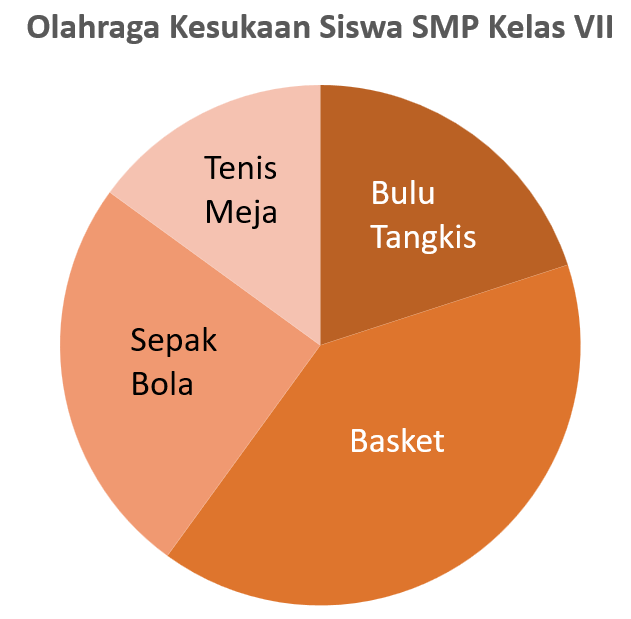
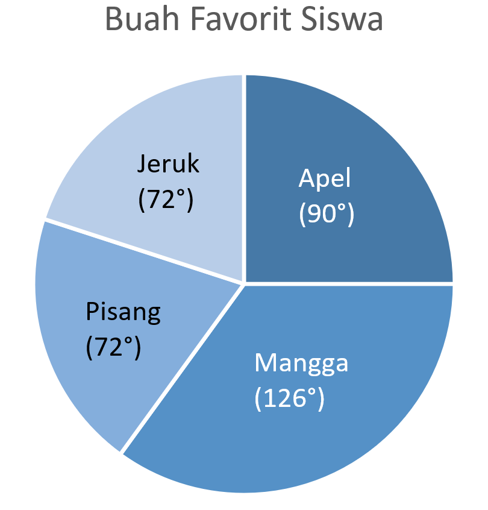

Media Interaktif Diagram Lingkaran dengan Scaffolding
Sheldon M. Ross dalam Introductory Statistics menjelaskan bahwa diagram lingkaran (pie chart) merupakan lingkaran yang dibagi menjadi beberapa sektor, dengan setiap sektor mewakili kategori data.
Pernahkah kamu melihat data yang disajikan dalam bentuk lingkaran seperti sebuah pie?

Sederhananya, diagram lingkaran adalah penyajian data menggunakan sebuah lingkaran yang dibagi menjadi beberapa bagian.
Perhatikan data buah favorit siswa berikut.
| Buah | Jumlah Siswa |
|---|---|
| 🍎 Apel | 5 |
| 🥭 Mangga | 7 |
| 🍊 Jeruk | 4 |
| 🍌 Pisang | 4 |
Sebelum membuat diagram, kita harus mengetahui jumlah seluruh data.
Sekarang kita akan menentukan besar sudut setiap bagian diagram.
Besar sudut suatu kategori dapat dihitung dengan:
Perhatikan data buah favorit siswa berikut.
| Buah | Jumlah Siswa |
|---|---|
| 🍎 Apel | 5 |
| 🥭 Mangga | 7 |
| 🍊 Jeruk | 4 |
| 🍌 Pisang | 4 |
| Jumlah Data | 20 |
Sekarang kamu sudah mengetahui besar sudut untuk siswa yang suka apel. Berikutnya, lakukan langkah yang sama pada kategori lain.
| Buah | Jumlah Siswa |
|---|---|
| 🍎 Apel | 5 |
| 🥭 Mangga | 7 |
| 🍊 Jeruk | 4 |
| 🍌 Pisang | 4 |
| Jumlah Data | 20 |
🍎 Apel
🥭 Mangga
🍊 Jeruk
🍌 Pisang
Artinya, seluruh data sudah terwakili oleh satu lingkaran penuh.
Kamu sudah menghitung besar sudut setiap kategori. Sekarang perhatikan diagram lingkaran berikut.

Besar sudut menunjukkan seberapa besar bagian suatu kategori dalam satu lingkaran.
🍎 90° berarti sektor apel besarnya tepat ¼ lingkaran.
🍊 dan 🍌 72° berarti sektor Jeruk dan pisang sedikit lebih kecil dari ¼ lingkaran (90°).
🥭 126° berarti sektor Mangga sedikit lebih kecil dari ½ lingkaran (180°).
Semakin besar sudut suatu kategori, semakin besar pula bagian kategori tersebut dalam diagram lingkaran.
Kamu telah menyelesaikan Materi Interaktif 1.
Kamu sudah belajar mengenal diagram lingkaran, menghitung jumlah data, menentukan besar sudut, dan memahami hubungan antara data dengan besar sektor.